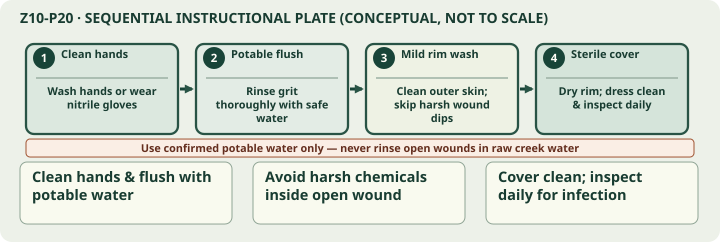

Z10-P20 · Wilderness medicine · New manuscript
Clean minor cuts and abrasions with potable water and protect against dirt
Reduce field wound infection risk using clean potable-water irrigation and protective dressings without damaging healthy tissue.
When it applies · Superficial minor cuts, scrapes, and abrasions after bleeding is controlled.
Equipment · Confirmed potable drinking water (or sterile saline), clean syringe/bag for gentle flushing, mild soap for surrounding intact skin, and sterile non-stick dressings.

Actions
- Wash your own hands (or wear clean gloves) first, then rinse the minor wound thoroughly under steady clean potable water to flush out dirt, grit, and surface debris.[M06, W29, F01]
- Wash surrounding intact skin gently with mild soap and safe water, avoiding pouring harsh alcohol, hydrogen peroxide, or full-strength iodine directly inside open tissue where they irritate healing cells.[M06, ED]
- Pat surrounding skin dry with clean gauze, cover the wound completely with a clean sterile dressing, and re-check daily for moisture, dirt breakthrough, or infection signs.[M06]
Failure recognition · Rinsing an open scrape in untreated creek water or sealing muddy grit inside a wound with tight tape.[M06, W29]
Verify · Confirm only confirmed potable/boiled-and-cooled water touched the wound, visible grit is flushed out, and the dressing stays clean and dry.[M06, W29]
Stop or change course · Deep gaping cuts, heavy dirt that will not flush clean, hand/face/joint wounds, or unknown tetanus status require prompt clinical care.[M06]
Evidence and editorial notes
- F01 · USDA / FDA / CDC · Four Steps to Food Safety (current web edition)
- Section: Clean and Separate · Conditions: Food preparation with safe water and surfaces
Support: Wash hands and separate raw animal foods and juices from ready-to-eat food.
Limitations: Requires safe water or approved hand hygiene substitutes in outages. · Conflicting evidence: None; retained for food safety pack completeness.
Editorial note: Maintains five-pack integrity. · Specialist reviewer: Food safety and public health
Primary source · checked 2026-11-24 - M06 · NIH / MedlinePlus · Wounds and Injuries (current web edition)
- Section: Minor Wound Cleaning, Protection, and Infection Red Flags · Conditions: Superficial cuts, scrapes, and abrasions with potable water available
Support: Rinse minor wounds thoroughly with clean potable water, cover with a clean sterile dressing, and monitor for worsening redness, warmth, swelling, pus, red streaks, or fever.
Limitations: Deep punctures, animal bites, retained foreign bodies, or heavily contaminated wounds require clinical evaluation and tetanus review. · Conflicting evidence: None; separates clean potable rinsing from harsh chemical wound scrubbing.
Editorial note: Anchors field wound hygiene and infection escalation cards. · Specialist reviewer: Wilderness medicine and wound care
Primary source · checked 2026-11-24 - W29 · CDC · How to Make Water Safe in an Emergency (2024-09-19)
- Section: Boil > Safe Water for Infants, Wounds, and Hygiene · Conditions: Emergency hygiene, wound rinsing, and infant formula preparation under water advisories
Support: Use confirmed potable or properly boiled-and-cooled water for brushing teeth, washing produce, cleaning wounds, and mixing infant formula; avoid untreated water for food-contact utensils.
Limitations: Do-not-use advisories may also prohibit skin contact or bathing depending on contaminant. · Conflicting evidence: None; extends drinking safety to hygiene and preparation boundaries.
Editorial note: Separates potable-required tasks from non-potable utility uses. · Specialist reviewer: Public health and wilderness medicine
Primary source · checked 2026-11-24
Source lineage · NIH MedlinePlus Wounds and CDC Safe Water; new manuscript · Classification · New manuscript.